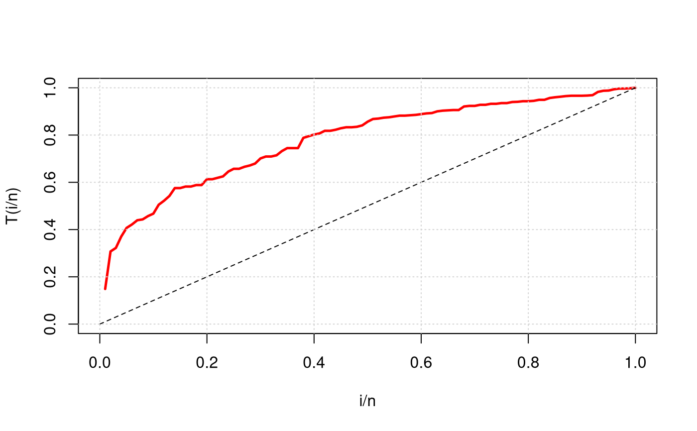

TTT.RdThere are several behaviors that the failure rate function of a random variable T can take. In this context, the graph of total test time (TTT curve) proposed by Aarset (1987) may be used for obtaining empirical behavior of the function failure rate.
TTT(x, lwd = 2, lty = 2, col = "black", grid = TRUE,...)
| x | Data vector; |
|---|---|
| lwd | Thickness of the TTT curve. The argument |
| lty | The argument |
| col | Color used in the TTT curve; |
| grid | If |
| ... | Other arguments passed by the user and available for the function |
Aarset, M. V. (1987). How to identify bathtub hazard rate. IEEE Transactions Reliability, 36, 106-108.
The graphic TTT may have various forms. Aarset (1987) showed that if the curve approaches a straight diagonal function constant failure rate is adequate. When the curve is convex or concave the failure rate function is monotonically increasing or decescente respectively is adequate. If the failure rate function is convex and concave, the failure rate function in format \(U\) is adequate, otherwise the failure rate function unimodal is more appropriate.
The TTT curve is constructed by values \(r/n\) and \(G(r/n)\), wherein $$ G(r/n) = \frac{[\sum_{i=1}^{r} T_{i:n} + (n-r)T_{r:n}]}{\sum_{i=1}^{n}T_{i:n}}, r = 1, \ldots, n, T_{1:n} = 1, \ldots, n. $$
